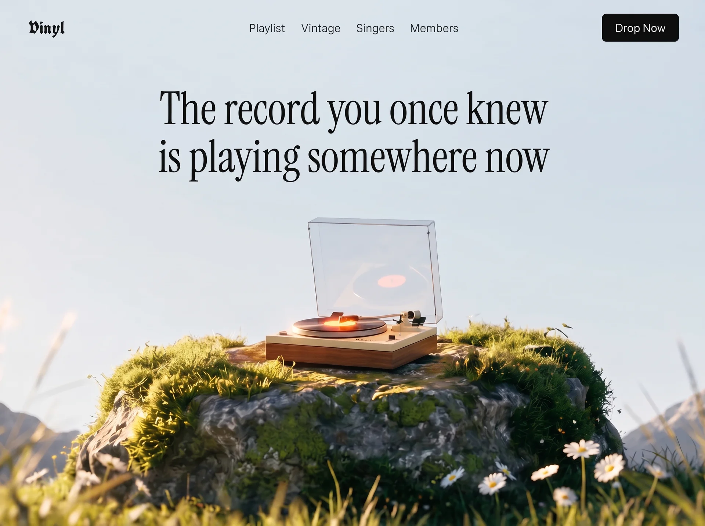

Vinyl
Musicmusicyilai-ai 公开页面
收录时间：2026-09-11正文：19,223 字符

本地预览图 · webp
完整提示词
Build a single, self-contained `index.html` file — a full-viewport hero section for a
vinyl/music-discovery site called "Vinyl". No build step, no frameworks, no local
assets, no external JS libraries. All CSS in one `<style>` block in the head, all JS
in one inline `<script>` before `</body>`. Plain HTML/CSS/vanilla JS only.
═══════════════════════════════════════════════════════════════════
1. ASSETS — use these exact remote URLs, do not substitute or localize
═══════════════════════════════════════════════════════════════════
BACKGROUND VIDEO (mp4, 1920x1080, 10s, silent, seamless loop):
https://d8j0ntlcm91z4.cloudfront.net/user_38xzZboKViGWJOttwIXH07lWA1P/hf_20260908_125738_eb584080-9f98-489e-adb2-014760aa34da.mp4
POSTER / FIRST FRAME (also used as the blurred mobile backdrop):
https://images.higgs.ai/?default=1&output=webp&url=https%3A%2F%2Fd8j0ntlcm91z4.cloudfront.net%2Fuser_38xzZboKViGWJOttwIXH07lWA1P%2Fhf_20260908_122011_59c97465-4d23-4fdc-ac40-f6832f573e28.png&w=1920&q=85
The footage: a vintage wooden turntable on a moss-covered rock in an alpine meadow at
golden hour, pale blue sky and blurred snowy mountains behind, daisies and grass. The
camera is locked off; the acrylic dust cover lifts open, the record spins, the tonearm
lowers. Poster and video share the same framing, so the poster is a perfect first frame.
In HTML attributes escape the `&` as `&`. In the CSS custom property use the raw `&`.
═══════════════════════════════════════════════════════════════════
2. FONTS
═══════════════════════════════════════════════════════════════════
Preconnect to fonts.googleapis.com and fonts.gstatic.com (crossorigin), then load:
https://fonts.googleapis.com/css2?family=Instrument+Serif:ital@0;1&family=UnifrakturCook:wght@700&family=Instrument+Sans:wght@400;500&display=swap
- Logo wordmark → "UnifrakturCook", serif — weight 700 (blackletter)
- Headline + mobile menu links → "Instrument Serif", Georgia, serif — weight 400
- Everything else (nav links, buttons, body) → "Instrument Sans", then
-apple-system, BlinkMacSystemFont, "Segoe UI", Helvetica, Arial, sans-serif
═══════════════════════════════════════════════════════════════════
3. DESIGN TOKENS (:root)
═══════════════════════════════════════════════════════════════════
--ink: #0b0b0c
--sky: #dbe6ee
--nav-gap: clamp(1.1rem, 2.2vw, 2.15rem)
--pad-x: clamp(1.25rem, 4vw, 3.6rem)
--ease: cubic-bezier(.22,1,.36,1)
--ease-in-out: cubic-bezier(.76,0,.24,1)
--poster: url("<POSTER URL, raw & >")
Global: border-box on everything; body margin 0, color var(--ink), background
var(--sky), overflow-x hidden; `-webkit-text-size-adjust:100%` on html; anchors
inherit color with no underline; buttons reset (inherit font/color, no bg/border,
cursor pointer). `body.menu-open{overflow:hidden}` locks scroll behind the menu.
═══════════════════════════════════════════════════════════════════
4. STRUCTURE
═══════════════════════════════════════════════════════════════════
<section class="hero"> position:relative; min-height:100svh;
overflow:hidden;
display:flex; flex-direction:column;
background:var(--sky)
<div class="hero__media"> position:absolute; inset:0; z-index:0
<img> poster, z-index:1
<video id="heroVideo"> z-index:2, autoplay muted loop playsinline
preload="auto" poster=<POSTER> aria-hidden="true"
<header class="nav"> IN NORMAL FLOW (position:relative),
z-index:60 ← must sit ABOVE .menu (50)
logo (left) / nav__links (absolutely centered) / nav__right (button + burger)
<div class="hero__inner"> flex:1 — fills the height left below the nav
<h1 class="headline"> two masked lines
</section>
<div class="menu" id="menu"> fixed overlay, z-index:50
ul.menu__list (4 links) / div.menu__rule / div.menu__foot (button)
</div>
Both <img> and <video> inside .hero__media: position absolute, inset 0, width/height
100%, object-fit cover, object-position center 62%, display block.
The video starts at opacity 0 with `transition:opacity 1.2s ease` and only goes to
opacity 1 when JS adds `.is-ready`, so the poster carries first paint with no flash.
═══════════════════════════════════════════════════════════════════
4b. HEADLINE PLACEMENT — read carefully, this is the easiest part to get wrong
═══════════════════════════════════════════════════════════════════
.hero is display:flex; flex-direction:column. It contains, in this order and in
NORMAL DOCUMENT FLOW — the header is NOT position:absolute, it occupies real layout
height at the top and pushes the headline block down:
<header class="nav"> ← in flow, position:relative, z-index:60
<div class="hero__inner"> ← flex:1, fills all remaining height below the nav
.hero__inner{
position:relative;
z-index:10;
flex:1; /* eats the leftover column height */
display:flex; /* REQUIRED — do not omit */
justify-content:center; /* horizontal centering of the <h1> only */
padding:clamp(1.5rem,5vh,4.5rem) var(--pad-x) 0;
pointer-events:none;
}
⚠ THE HEADLINE IS TOP-ANCHORED, NOT VERTICALLY CENTERED.
Do NOT add `align-items:center`. Do NOT add `place-items:center`. Do NOT put
`margin:auto` on the h1. `align-items` is deliberately left at its default value
(`stretch`), so the <h1> box spans the full height and its text renders at the TOP of
that box. `align-items:flex-start` is an acceptable equivalent; anything that centers
or bottom-aligns is wrong.
The only thing separating the headline from the nav is that padding-top:
clamp(1.5rem, 5vh, 4.5rem). The result is a headline sitting in the upper third of the
viewport, in the open sky, with the turntable clearly below it and never behind the
text. If your headline ends up vertically centered over the turntable, you have added
an align-items rule that must be removed.
Horizontal centering comes from two independent things, both required:
- justify-content:center on .hero__inner (centers the h1 box in the row)
- text-align:center on .headline (centers the lines within that box)
═══════════════════════════════════════════════════════════════════
5. EXACT COPY (character counts are load-bearing — do not reword)
═══════════════════════════════════════════════════════════════════
<title> Vinyl — The record you once knew is playing somewhere now
Logo Vinyl (aria-label="Vinyl — home", href="#")
Nav links Playlist / Vintage / Singers / Members
hrefs: #discover / #library / #artists / #pricing
Button (×2) Drop Now (href="#play")
Headline line 1 The record you once knew
Headline line 2 is playing somewhere now
img alt A vintage turntable resting on a mossy rock in an alpine meadow at golden hour
Headline markup — each line is double-wrapped so the inner span can slide out from
behind an overflow mask:
<h1 class="headline">
<span class="line"><span>The record you once knew</span></span>
<span class="line"><span>is playing somewhere now</span></span>
</h1>
The mobile menu repeats the same four nav links and the same "Drop Now" button.
═══════════════════════════════════════════════════════════════════
6. NAV STYLING
═══════════════════════════════════════════════════════════════════
.nav — position:relative; z-index:60; flex, align center, space-between, gap 1rem,
padding clamp(1.1rem,2.4vw,1.9rem) var(--pad-x)
.logo — clamp(1.5rem,2.4vw,1.9rem), line-height 1, letter-spacing .01em, nowrap
.nav__links — flex, gap var(--nav-gap), list-style none, margin 0, padding 0, and
absolutely centered in the header via
position:absolute; left:50%; top:50%; transform:translate(-50%,-50%)
.nav__links a — clamp(.95rem,1.05vw,1.05rem), letter-spacing .005em, padding .15rem 0,
inline-block, position relative
::after underline — 1px, currentColor, left/right 0, bottom -2px,
transform:scaleX(0) origin right, transition transform .5s var(--ease);
on hover scaleX(1) with origin left (wipes in from the left, out to the right)
.nav__right — flex, align center, gap .6rem
.btn-play — background var(--ink), color #fff, radius 6px, padding .72rem 1.15rem,
font-size .95rem, line-height 1, nowrap,
transition transform/background-color/box-shadow .45s var(--ease)
:hover translateY(-2px), bg #1e1e21, box-shadow 0 10px 24px -12px rgba(0,0,0,.6)
:active translateY(0)
HAMBURGER (.burger) — display:none on desktop; 44x44, margin-right -8px, position
relative, z-index 60, radius 8px, flex 0 0 auto. Three spans: left 11px, width 22px,
height 1.6px, background var(--ink), radius 2px,
transition transform .55s var(--ease-in-out), opacity .3s ease, width .55s var(--ease-in-out).
Positions: span1 top 17px; span2 top 22px width 15px (deliberately shorter); span3 top 27px.
On `.is-active`: span1 translateY(5px) rotate(45deg); span2 opacity 0 translateX(10px);
span3 translateY(-5px) rotate(-45deg) → morphs into an X.
═══════════════════════════════════════════════════════════════════
7. HEADLINE STYLING
═══════════════════════════════════════════════════════════════════
.headline{
margin:0; /* kill the default h1 margin */
font-family:"Instrument Serif",Georgia,serif;
font-weight:400;
font-size:clamp(2.7rem,6.3vw,6.75rem);
line-height:1.06;
letter-spacing:-.005em;
text-align:center;
}
No max-width on desktop — the nowrap lines define their own width.
.line{
display:block;
overflow:hidden; /* the mask the inner span slides out of */
white-space:nowrap; /* desktop: the 2-line break is design, never re-wraps */
padding-bottom:.06em;
margin-bottom:-.06em; /* pad + negative margin: descenders clear the mask
without adding layout height */
}
The clamp is tuned so line 1 occupies ~53% of viewport width at 1280px and never
overflows at any width ≥901px.
═══════════════════════════════════════════════════════════════════
8. ANIMATIONS — staggered entrance
═══════════════════════════════════════════════════════════════════
(a) MEDIA PLATE — .hero__media starts transform:scale(1.08), filter:blur(14px),
opacity 0; `animation: mediaIn 1.9s var(--ease) .1s forwards`
@keyframes mediaIn { to { transform:scale(1); filter:blur(0); opacity:1 } }
(b) NAV STAGGER — utility class .rise: opacity 0, translateY(-14px),
`animation: rise .95s var(--ease) forwards`
@keyframes rise { to { opacity:1; transform:translateY(0) } }
Delay classes: .d1 .18s / .d2 .26s / .d3 .32s / .d4 .38s / .d5 .44s / .d6 .52s
Applied as: logo=d1, nav links=d2,d3,d4,d5, button AND burger=d6
(c) HEADLINE LINES — .line > span: display block, translateY(110%), opacity 0,
`animation: lineUp 1.25s var(--ease) forwards`
@keyframes lineUp { to { transform:translateY(0); opacity:1 } }
Line 1 delay .55s, line 2 delay .68s → they rise out from behind the mask.
(d) REDUCED MOTION — inside @media (prefers-reduced-motion:reduce) force
animation-duration .01ms, animation-delay 0ms, transition-duration .01ms on
*, *::before, *::after; and reset .hero__media (opacity 1, no transform/filter)
and .line > span (no transform, opacity 1) so nothing is left invisible.
═══════════════════════════════════════════════════════════════════
9. MOBILE MENU — premium open/close
═══════════════════════════════════════════════════════════════════
.menu — position fixed, inset 0, z-index 50, flex column, justify-content center,
padding 0 var(--pad-x), background rgba(233,240,246,.92),
backdrop-filter + -webkit-backdrop-filter: blur(22px) saturate(140%),
clip-path: inset(0 0 100% 0), visibility hidden,
transition: clip-path .85s var(--ease-in-out), visibility 0s linear .85s
.menu.is-open — clip-path: inset(0 0 0 0), visibility visible,
transition: clip-path .85s var(--ease-in-out), visibility 0s linear 0s
(the visibility delay flips to 0s on open and 0.85s on close so the panel
stays hittable during the wipe and is properly removed after it)
.menu__list{list-style:none;margin:0;padding:0}
.menu__list li{overflow:hidden} — masks for the link reveal
.menu__list a — Instrument Serif, clamp(2.35rem,12vw,3.4rem), line-height 1.22,
padding .12em 0, display block, translateY(115%), opacity 0,
transition transform .8s var(--ease), opacity .6s ease
When open → translateY(0), opacity 1, with transition-delay per item:
1st .26s, 2nd .33s, 3rd .40s, 4th .47s
.menu__rule — 1px, rgba(11,11,12,.16), margin 2.2rem 0 0, scaleX(0) origin left,
transition transform .9s var(--ease); when open scaleX(1) delay .5s
.menu__foot — margin-top 2.2rem, opacity 0, translateY(22px),
transition transform .8s var(--ease), opacity .6s ease;
when open opacity 1 / translateY(0) delay .56s
.menu__foot .btn-play — inline-block, padding .95rem 1.6rem, font-size 1rem
Everything reverses on close because it is all transitions, not animations.
⚠ Z-INDEX REQUIREMENT: .nav must be z-index 60 (NOT 20) so the close (X) button and
the logo render above the open overlay (z-index 50). A z-index on .burger alone does
not work — .nav creates the stacking context, so a low value on .nav traps the burger
underneath the panel and the menu becomes impossible to close.
═══════════════════════════════════════════════════════════════════
10. RESPONSIVE
═══════════════════════════════════════════════════════════════════
@media (max-width:900px)
hide .nav__links and .nav__right .btn-play; show .burger (display:block)
video/img object-position: center 60%
.hero__inner{align-items:flex-start} /* still top-anchored, just explicit here */
.line{white-space:normal} /* copy may re-wrap below this breakpoint */
.headline{font-size:clamp(2.4rem,6.4vw,3.6rem); max-width:15ch}
@media (max-width:900px) and (orientation:portrait) ← the important one
A 16:9 clip stretched to cover a 375×812 screen shows only ~26% of its width: the
turntable fills the screen and the sky the headline sits on is cropped away. Fix:
.hero__media::before{display:block} (the blurred backdrop, see below)
video, img { top:auto; bottom:0; height:64svh; object-position:center 62%;
mask-image and -webkit-mask-image:
linear-gradient(180deg, rgba(0,0,0,0) 0%, rgba(0,0,0,.6) 9%, #000 20%) }
The footage is bottom-anchored at a sane scale and its top edge is feathered into
the backdrop, so there is no visible seam and the open-sky composition survives.
The backdrop itself — .hero__media::before, defined globally but display:none by
default: content ""; position absolute; inset -8%; z-index 0;
background: var(--poster) center 22%/cover no-repeat;
filter: blur(30px) saturate(104%); transform: scale(1.05).
Because it is the same frame as the footage, the colors match exactly.
@media (max-width:560px)
.headline{font-size:clamp(2.15rem,9.4vw,3.1rem); line-height:1.12; max-width:11ch}
.hero__inner{padding-top:clamp(1.75rem,7vh,3rem)}
video/img object-position: center 58%
@media (max-width:380px)
.headline{font-size:2rem}
@media (max-height:520px) and (orientation:landscape)
.headline{font-size:clamp(1.7rem,5vw,2.4rem); max-width:22ch}
.hero__inner{padding-top:.75rem}
.menu__list a{font-size:clamp(1.4rem,5vw,1.9rem)}
.menu__rule{margin-top:1.2rem} .menu__foot{margin-top:1.2rem}
TYPE OVERLAY WASH — .hero__media::after, inset 0, z-index 3, pointer-events none:
linear-gradient(to bottom, rgba(226,236,243,.55) 0%, rgba(226,236,243,.18) 34%,
rgba(226,236,243,0) 58%),
radial-gradient(120% 70% at 50% 0%, rgba(255,255,255,.35), rgba(255,255,255,0) 60%)
This keeps the black type crisp against the sky without visibly dimming the footage.
═══════════════════════════════════════════════════════════════════
11. JAVASCRIPT (one IIFE, ~40 lines, no libraries)
═══════════════════════════════════════════════════════════════════
MENU: a setMenu(next) function that toggles `.is-open` on #menu, `.is-active` on
#burger, `.menu-open` on body, and sets aria-expanded ("true"/"false") plus aria-label
("Close menu"/"Open menu") on the burger. Wire up:
- burger click → setMenu(!open)
- click inside the menu on an <a> (use e.target.closest('a')) → setMenu(false)
- Escape key while open → setMenu(false)
- window resize while open and innerWidth > 900 → setMenu(false)
VIDEO: add `.is-ready` on the video only once it actually has frames —
if (video.readyState >= 3) reveal(); else video.addEventListener('loadeddata', reveal, {once:true});
Then a kick() that calls video.play() and swallows the rejected promise
(`if (p && p.catch) p.catch(function(){})`), invoked immediately and again on the
first touchstart ({once:true, passive:true}) and first click, because some mobile
browsers withhold autoplay until a gesture.
═══════════════════════════════════════════════════════════════════
12. ACCESSIBILITY
═══════════════════════════════════════════════════════════════════
Decorative video gets aria-hidden="true"; the poster <img> carries the real alt text.
Burger is a real <button> with aria-label / aria-expanded / aria-controls="menu".
Desktop <nav aria-label="Primary">, mobile <nav aria-label="Mobile">. Logo has
aria-label="Vinyl — home". Reduced-motion handled as described in §8(d).
═══════════════════════════════════════════════════════════════════
13. ACCEPTANCE CHECKS
═══════════════════════════════════════════════════════════════════
1. At ≥901px the headline renders on exactly two lines, unwrapped, centered, with
document.documentElement.scrollWidth === window.innerWidth (no h-overflow).
2. The headline sits in the UPPER THIRD of the viewport — its top edge is roughly one
nav-height plus clamp(1.5rem,5vh,4.5rem) from the top of the page, and the
turntable is fully below the text, never behind it. It is NOT vertically centered.
3. Both headline strings are exactly 24 characters.
4. At 375×812 the burger is visible top-right, the headline wraps to four lines, and
the sky occupies roughly the top half with the deck bottom-anchored and seamless.
5. With the menu open, document.elementFromPoint() over the burger returns an element
inside #burger (i.e. the X is clickable, not trapped under the overlay).
6. On first load the poster is visible immediately and the video cross-fades in over
1.2s once buffered; the loop has no visible jump (start and end frames match).
7. Page background is #dbe6ee, so any letterboxing reads as sky, never black.把上面的提示词完整复制到支持长文本的 AI 工具中，再按需要替换品牌名、配色与文案。提示词描述的是整页结构与动效节奏，生成后建议在真实浏览器里检查首屏加载和移动端表现。
来源与版权
该条目来自公开提示词页面，原始出处信息未随页面提供。
提示词文本与预览素材的版权归原作者或原平台所有，本站仅作索引与归档。若你是权利人并希望移除本条内容，请通过联系方式告知。